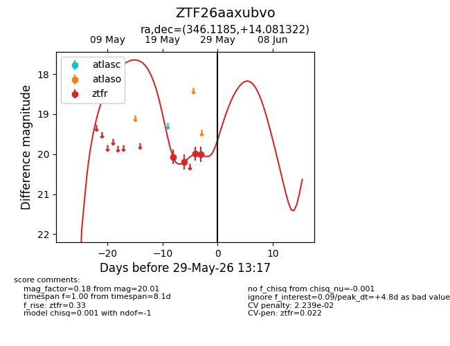
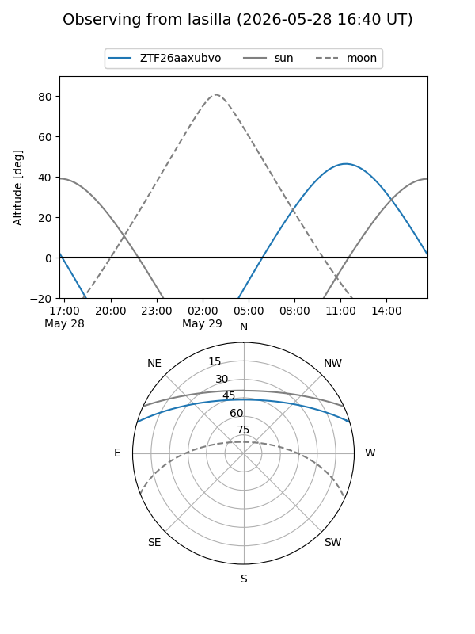
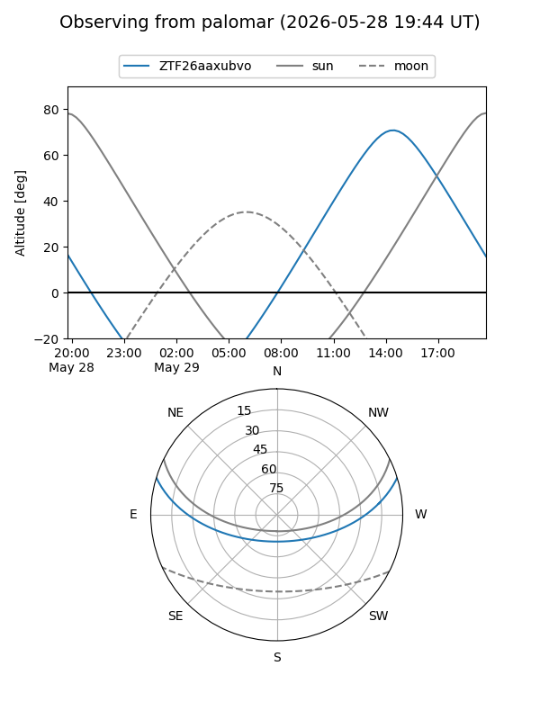
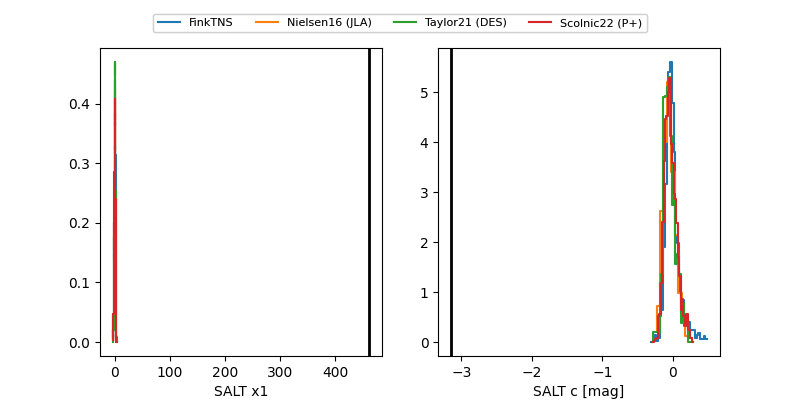

ZTF26aaxubvo
Target ZTF26aaxubvo at 2026-05-29 13:18
Aliases and brokers:
lsst-FINK: link
lsst-Lasair: link
lsst-ALeRCE: link
ztf-FINK: link
ztf-Lasair: link
ztf-ALeRCE: link
alt names
ZTF26aaxubvo (ztf,fink_ztf)
Coordinates:
equatorial (ra, dec) = 346.1185,+14.08132
equatorial (HMS+DMS) = 23:04:28.43,+14:04:52.76
galactic (l, b) = (87.4164,-41.29838)
Flags:
likely cv: !
Photometry:
last ztfr=20.01
4 ztfr detections
Lightcurve

Visibility


Additional plots
